光明山普覚禅寺
KongMengSan
PhorKarkSeeMonastery
御存じの通り、シンガポールは様々な民族が住んでいて、狭い国内にはタイ、ミャンマー、チベット、スリランカ、中国などの仏教寺院や道教、ヒンズー教やシーク教寺院、キリスト教の教会、ユダヤ教会、イスラム教のモスクなどなど、世界中の宗教施設の見本市場のような状態になっている。
そんな中でシンガポール最大の中国系仏教寺院は郊外にある光明山普覚禅寺である。
本堂（大雄宝殿）の前には演壇が作られて階段に赤絨毯がひかれていた。新年のイベントか何かがあったのだろうか。
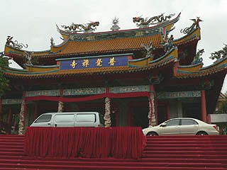
本堂内には何故かタイ風の金ピカの釈迦像を中心にこれまた金ピカの観音様や羅漢さんが脇を固めていた。
本堂を抜けると屋根付きの回廊が真直ぐタイ風のチェディ（仏塔）に向かって延びている。境内は広く、各堂宇は中央の回廊から枝分かれしていて雨が降っていても全部の堂宇に濡れずに移動出来る。雨だったのでこれは助かった。
まずはタイ風のチェディがそびえ立つ萬仏塔に向かう。
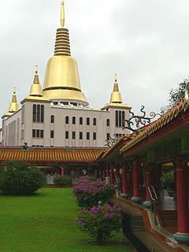
回廊の途中にビニールシートで覆われた段ボール箱が大量に積まれていた。
何かと思ったらインド洋津波の被災地に送る支援物資だ。境内ではボランティアの人達が忙しそうに荷物の仕分け、運搬をしていた。
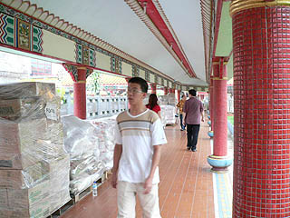 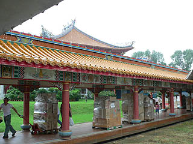
この寺は様々な社会活動に積極的なようだ。皆さん御苦労さまです。
萬仏塔に向かう前に少し寄り道。甘露戒堂という八角のお堂だ。
中央にあるケーキのような台座と柱と梁の継ぎ手にいる羽の生えたお方がファンシー魂全開でした。
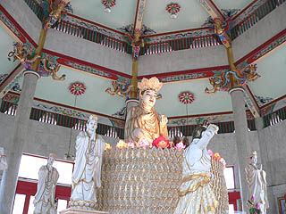 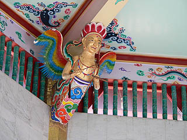
屋外にある石の大観音。
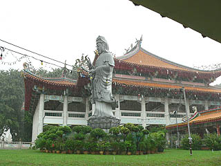
で、萬仏塔に着く。
萬仏塔の1階も様々な支援物資が運び込まれていて多くの人が働いていた。
・・・忙しいところ、スミマセン。一寸お邪魔します。
階段を登り、4階あたりから外を見下ろす。
寺の歴史は1920年代にさかのぼるが、現在の建物は1980年代以降の建設と比較的新しい。
青々とした芝生に点在する数々のお堂を見ているとかなり浮き世離れした豪華な寺である事がわかる。
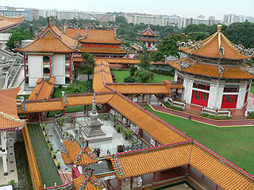
萬仏塔の裏手には火葬場と納骨堂があり、多くの人が参拝に訪れていた。
その屋上には巨大なお地蔵さんらしきビッグな像が立っていた。
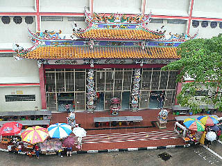 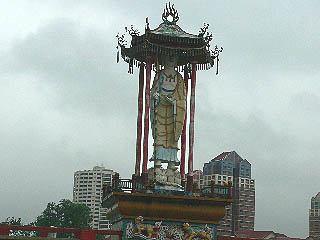
最近完成した宏船長老記念館。ただただ大きい建物だった。
私が訪れた時は人が居らず中には入れなかったが、日本の新興宗教を彷佛とさせる巨大建築だった。
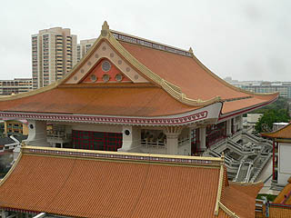
萬仏塔の最上階には広いホールに大仏がデーンとおわす。
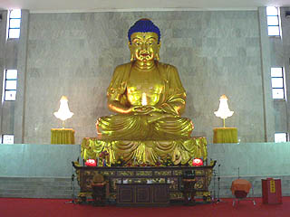
千燈寺院の大仏と同じ位大きな大仏だがここは広いホールにぽつんとあるので大仏特有のおらおらオーラが出切っていないのが遺憾である。
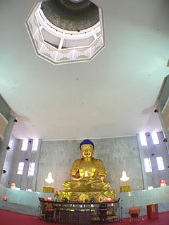
絨毯敷の大ホールには誰もおらずガラーンとしている。
少し休もうと思いごろんと寝転がると、おっ！天上に穴が開いているじゃないですか。
しかも手摺があるということはあそこに行けるということですな。早速階段を登り、屋上に出てみる。
屋上にはタイ風のチェディが建っておりその中に入れるようになっている。
中にはお釈迦様が弟子達に説法を説いている最中。お邪魔しま〜す。
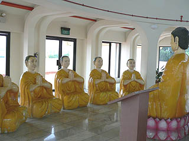
八角形の穴を見下ろすと・・・
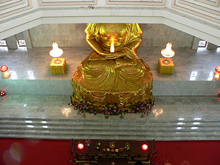
おおお、おりますおります。大仏さんを上から見ることができるとは、ありがたや。
見上げると、仏塔の内側にはびっしりと小さな仏像が貼付けられていた。萬仏塔ってこういう事だったのか・・・
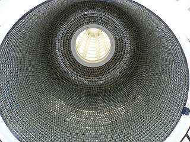 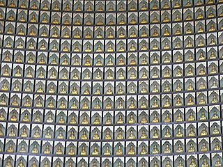
萬仏塔を出て再び本堂に戻る。
本堂の前にある大悲殿は正月の飾り付けなのだろうか、金と白の布が張り巡らされていてとてもきらびやかだった。
中国系の人達は旧正月の方が賑やかなはずなので、コレでも控えめな飾り付けなのかもしれない。
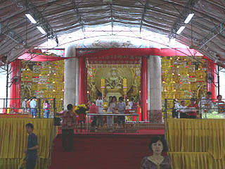 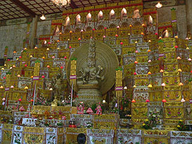
大悲殿の前には特設会場のようなものもありそこにはお供物もずらりと並べられていた。
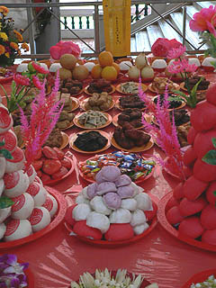
さらに大悲殿と向かい合うようにこちらはオレンジ色の布が張られていてとても美しかった。
細かい刺繍が施された布がズラーっと並ぶ様はいかにも「中国」っぽかったです。
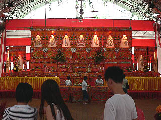 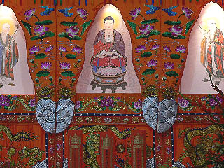
初詣に来る人、墓参りに来る人、修行に来る人、ボランティアに来る人、大仏見に来る人、様々な正月模様であった。
次のスポットへGO！
馬来半島珍寺伝説
珍寺大道場 HOME